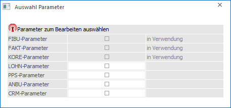
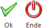

Über den Menüpunkt
1 WinLine START
1 Parameter
1 Applikations-Parameter
können im ersten Schritt alle Einstellungen, die für die einzelnen Programme vorgenommen werden können, überprüft werden. Damit die Parameter auch bearbeitet werden können, muss der Bearbeiten-Button aktiviert werden, womit dann das Fenster "Auswahl Parameter" geöffnet wird.
Hier können nun die Programmbereiche gewählt werden, die bearbeitet werden sollen. In diesem Fenster ist auch ersichtlich, welche Datenbereiche bearbeitet werden können und welche nicht (weil gerade andere Benutzer mit anderen Bereichen arbeiten, die eine Änderung verhindern).

Erst wenn die Auswahl getroffen und mit OK bestätigt wird, können die ausgewählten Parameter verändert werden. Zu diesem Zeitpunkt wird dann auch ein Lock abgesetzt, der verhindert, dass andere Benutzer Aktionen ausführen können, die sich mit den zu ändernden Parametern überschneiden würden.
Buttons

Ø Ok
Durch Anklicken des Buttons "Ok" bzw. der Taste F5 werden die gewählten Parameter zur Bearbeitung freigeschalten und es wird in das Parameter-Fenster zurückgewechselt.
Ø Ende
Durch Drücken des Buttons "Ende" bzw. der Taste ESC wird das Fenster geschlossen und es können keine Parameter bearbeitet werden.